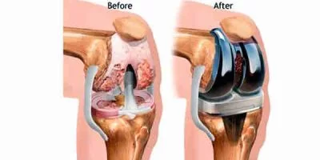

Knee Replacement Surgery Cost In Hyderabad, India
A "Knee replacement surgery" is a surgical procedure that replaces damaged parts of the knee joint with artificial materials. It is often recommended for people suffering from severe arthritis pain.
Age
There are several factors that can impact the total cost of knee replacements. These include the patients age, gender, medical history, and insurance coverage.

Knee Replacement Surgery Video
For Quick Enquiry
Medical History
Age is one factor that impacts the total cost of knee surgeries. Younger patients tend to require less extensive procedures than older patients. This means that younger patients will likely pay less for their knee replacement surgery. However, there are also some risks associated with younger patients. They may not have had enough time to develop certain diseases that could lead to complications after knee replacement surgery.
The average age of people who undergo knee replacement surgery is around 65 years old. Patients between the ages of 50 and 64 are most likely to receive knee replacements. These patients often have arthritis and other joint problems.
Other Factors
There are several other factors that impact the total cost of knee replacements. These include the type of procedure performed, whether the patient has any pre-existing conditions, and the location where the surgery takes place.
The average cost of a knee replacement ranges from 1.7 Lacs to 3.5 Lacs. However, there are many ways to reduce the overall costs associated with the procedure. For example, patients who undergo minimally invasive procedures tend to recover faster than those who receive open surgeries. In addition, some insurance companies offer discounts for patients who undergo outpatient procedures. Finally, if you live in a rural area, you might be able to find a lower price for the same procedure at a hospital located closer to home.
If you want to save money on your knee replacement surgery, consider taking advantage of these options.
The total cost of knee replacement surgery varies depending on where you live, what kind of procedure you choose, and whether you use insurance or pay cash. However, there are some things you can do to lower the costs.
Frequently Asked Questions
What is knee replacement surgery?
Knee replacement surgery, also known as knee arthroplasty, involves replacing a damaged knee joint with an artificial implant to relieve pain and restore function.
Why is knee replacement surgery needed?
It is typically recommended for patients with severe knee pain and disability due to osteoarthritis, rheumatoid arthritis, or other degenerative joint diseases.
What is price of knee replacement surgery in Hyderabad?
The cost can vary widely based on hospital, surgeon, type of implant, and additional services. On average, it ranges from INR 1.7 lakh to INR 3.5 lakh per knee.
Is Germanten Hospital a good choice for knee replacement surgery?
Yes, Germanten Hospital is known for its advanced orthopedic care and experienced surgeons.
What is robotic knee replacement surgery?
Robotic knee replacement surgery uses advanced robotic technology to assist surgeons in performing precise and minimally invasive knee replacement procedures.
How long does knee replacement surgery take?
The surgery usually takes about 1 to 2 hours, depending on complexity and type of procedure.
How long does it take to recover after knee replacement surgery?
Initial recovery typically takes about 6 weeks, with full recovery and rehabilitation lasting 3 to 6 months.
How can I prepare for knee replacement surgery?
Preoperative preparation includes medical evaluations, stopping certain medications, and arranging for postoperative care and assistance at home.
How long do knee implants last?
Knee implants typically last 15 to 20 years, with advancements in technology potentially increasing their longevity.
What types of knee implants are available?
There are several types, including fixed-bearing, mobile-bearing, and gender-specific implants, each with unique benefits.
Is it possible to undergo knee replacement surgery for both knees simultaneously?
Yes, this is called bilateral knee replacement, but it's usually recommended only for patients in good overall health.
What is success rate of knee replacement surgery?
The success rate is high, with over 90% of patients experiencing significant pain relief and improved mobility.
Is knee replacement surgery covered by insurance?
Most health insurance plans cover knee replacement surgery, but it's important to check specifics of your policy. For detailed information about our insurance partners and TPA networks, visit our insurance companies page.
What kind of postoperative care is needed?
Postoperative care includes pain management, physical therapy, and regular follow-up visits with surgeon.
What activities can I resume after knee replacement surgery?
Most patients can return to low-impact activities like walking, swimming, and cycling, but high-impact sports should be avoided.
How can I find best surgeon for knee replacement in Hyderabad?
Look for experienced surgeons with positive patient reviews, like Dr. Mir Jawad Zar Khan, and consult with them about their approach and success rates.
What should I expect during my hospital stay for knee replacement surgery?
Hospital stays typically last 3 to 5 days, during which time you will receive postoperative care, pain management, and begin physical therapy.